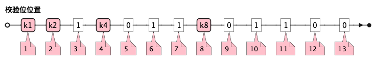
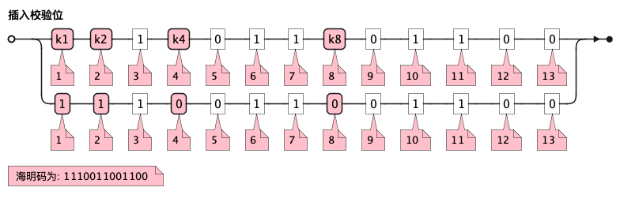

数据表示
校验码（在OSI的数据链路层）
奇偶校验
奇校验：原始数据增加一个校验位，使 1 的个数为奇数。
原始数据 校验位 10010100 0 -> 1 的个数为奇数，所以校验位为 0
偶校验：原始数据增加一个校验位，使 1 的个数为偶数。
原始数据 校验位 10010100 1 -> 1 的个数为奇数，所以校验位为 1
-
奇偶校验只有在出错二进制位个数是 奇数 的情况下才有效。
-
奇偶校验只能检错，不能纠错。
码字：编码后的信息单元，由若干个二进制位组成。
距离：将两个码字逐位进行对比，具有不相同的位的个数称为两个码字间的距离。
-
1011101 和 1001001 之间的距离是 2。
1011101 1001001 x x -> 2 位不同
-
奇偶校验的码距为 2
-
以奇校验为例：如下面完整码字的任意两个奇数个 1 的码字之间，至少要改两个比特才能从一个合法码字变成另一个合法码字。所以码距是 2。
举例说明奇校验码距为 2 数据位 校验位（奇校验） 完整码字 000
1
0001
001
0
0010
010
0
0100
011
1
0111
100
0
1000
101
1
1011
110
1
1101
111
0
1110
-
码距：一种编码方案可能有若干个合法码字，各合法码字间的 最小距离 称为“码距”。
计算（偶校验为例）：各信息位进行异或（模2加）运算，得到的结果即为「偶校验位」。
-
如 1001101 异或结果为 0，所以偶校验位为 0。
-
则最后发送的数据为 10011010（假设将校验位放在最后面）
验证（偶校验为例）：收到方验证数据
-
将收到的数据 10011010 按位异或结果为 0，说明数据正确。
https://www.bilibili.com/video/BV1qp421D7B3 0:00 → 02:44
循环冗余校验码（CRC校验）
给定待发送的数据为: 101001
要求的校验码多项式为: \(G(x) = x^3 + x^2 + 1\)
-
根据多项式确定 CRC 校验码位数
-
因为多项式最高次幂为 3，所以校验码位数为 3。
-
-
数据左移校验码位数
-
数据补 3 个 0 为: 101001000
-
-
确定多项式的值
-
根据多项式确定 \(G(x) = x^3 + x^2 + 1\) → \(1 \cdot x^3 + 1 \cdot x^2 + 0 \cdot x^1 + 1 \cdot x^0\) → 1101
-
-
计算 CRC 值（除法异或运算）
1010 01000 ÷ 1101 1101 (生成多项式) ---- 01110 1000 (第一步 XOR 结果) 1101 ---- 001110 00 (第二步 XOR 结果) 1101 ----- 001100 (第三步 XOR 结果) 1101 ---- 0001 (CRC 余数为 1，则 3 位校验位为 001) -
生成发送数据 = 传输数据 + CRC校验码
-
101001+001 → 101001001
-
-
从低到高举例 12:27 → end
海明码
-
可检错和纠错，海明码的标准码距是 3
-
可发现 2 位错，纠正 1 位错
-
用到了奇偶校验中的偶校验。
-
计算 k 位数公式：\(2^k \geq n + k + 1\)
-
n 为信息码长度
-
k 为校验码长度（需要通过上面公式，自己代出来即可）
-
校验码位置：\(2^{i-1}\) ( i 从 1 → k，如1、2、4、8 )
-
-
异或校验整个海明码，都为 0 正确。
视频教学
-
https://www.bilibili.com/video/BV1qp421D7B3 从低到高举例 02:44 → 12:27
Example1 计算海明码
例如: 信息码 101101100，采用海明码校验，问最终海明码是多少?
-
确定校验位数量 k，原信息码位数为 n=9，代入公式:
-
\(2^k \geq n+k+1\)，得 \(2^k \geq 9+k+1\)
-
若 k=4，则 \(2^4 \geq 9+4+1\)，即 16>14，满足公式。
-
确定校验位数量为 4 位
-
-
确定校验码位置: 代入公式 \(2^{i-1}\) ( i 从 1→ k=4，得 1、2、4、8 )，即下面 k1、k2、k4、k8 的 4 个位置。
 -
确定校验位与数据位对应关系
-
即 kx 分别对应哪些数据位
校验位对应数据位表 (为1则对应)
4个校验位
k8 (9,10,11,12,13)
k4 (5,6,7,12,13)
k2 (3,6,7,10,11)
k1 (3,5,7,9,11,13)
9个数据位对应校验位关系
3 → 0011 → k1, k2
0
0
1
1
5 → 0101 → k1, k4
0
1
0
1
6 → 0110 → k2, k4
0
1
1
0
7 → 0111 → k1, k2, k4
0
1
1
1
9 → 1001 → k1, k8
1
0
0
1
10 → 1010 → k2, k8
1
0
1
0
11 → 1011 → k1, k2, k8
1
0
1
1
12 → 1100 → k4, k8
1
1
0
0
13 → 1101 → k1, k4, k8
1
1
0
1
-
-
计算校验位的值
-
异或结果为 kx 的值
k1 对应位
3
5
7
9
11
13
异或结果为 k1
信息码对应值
1
0
1
0
1
0
1
k2 对应位
3
6
7
10
11
异或结果为 k2
信息码对应值
1
1
1
1
1
1
k3 对应位
5
6
7
12
13
异或结果为 k3
信息码对应值
0
1
1
0
0
0
k4 对应位
9
10
11
12
13
异或结果为 k4
信息码对应值
0
1
1
0
0
0
-
-
插入校验位 k1 k2 k4 k8
 -
接收方检错和纠错判断
-
接收方接收正确数据时: 1110011001100，按《4. 计算校验位的值》中的表进行异或（含 kx 值），都为 0 为正确。
-
接收方接收错误数据时: 1110111001100，按《4. 计算校验位的值》中的表进行异或（含 kx 值），若有 1 为错误。
-
此例为数值位 5 由 0 变成了 1
-
如何知道是数据位 5 发生了变化？ → 将异或结果由 k8 k4 k2 k1 排序为 0 1 0 1，即是十进制的位置 5。
-
k1
3
5
7
9
11
13
异或结果
1
1
0 → 1
1
0
1
0
1 错
k2
3
6
7
10
11
异或结果
1
1
1
1
1
1
0
k4
5
6
7
12
13
异或结果
0
0 → 1
1
1
0
0
1 错
k8
9
10
11
12
13
异或结果
0
0
1
1
0
0
0
-
数据结构
二叉树小根堆
对于 n 个元素的关键字序列 { k1,k2, …kn }，当且仅当满足关系 ki ≤ k2i 且 ki ≤ k2i+1 {i=1.2…[n/2]} 时称其为小根堆(小顶堆)。
以下序列中，（ ）不是小根堆(小顶堆)。
A 16,25,40,55,30,50,45 B 16,40,25,50,45,30,55 C 16,25,39,41,45,43,50 D 16,40,25,53,39,55,45
这是根据完全二叉树在数组中的存储方式来判断的。小根堆是一种完全二叉树结构的堆，在顺序存储时具有以下规律：

答案为 D
二叉树遍历顺序
已知一棵二叉树的先序遍历结果为 ABCDEF，中序遍历结果为 CBAEDF，则后序遍历结果为（ ）。
A CBEFDA B FEDCBA C CBEDFA D 不确定
我们根据 先序遍历 和 中序遍历 来还原这棵二叉树，再求出它的 后序遍历。
给定：
-
先序遍历（Preorder）：
A B C D E F -
中序遍历（Inorder）：
C B A E D F
步骤一：构建二叉树
先序遍历的第一个节点是根节点：
-
根节点：A
查找 A 在中序遍历中的位置：
-
中序遍历：
C B | A | E D F
所以 A 的左子树是 C B，右子树是 E D F。
处理左子树：
先序遍历中 A 的左子树部分是：B C
-
根是 B（先序中紧跟 A 之后）
-
中序左子树为
C B，B 是根，C 在左边 ⇒ C 是 B 的左子
左子树构建为：
B
/
C处理右子树：
先序遍历中 A 的右子树部分是：D E F（剩下的）
-
根是 D（下一个未使用的先序元素）
-
中序右子树是
E D F
D 在中序中的位置中间，所以：
-
左子树：E
-
右子树：F
右子树构建为：
D
/ \
E F整体树结构为：
A
/ \
B D
/ / \
C E F步骤二：求后序遍历（Postorder）
后序遍历顺序是：左 → 右 → 根
按照树结构遍历：
-
左子树（B 的子树）：C → B
-
右子树（D 的子树）：E → F → D
-
根：A
合起来是：C B E F D A
答案：A. CBEFDA
哈夫曼树(最优二叉树)
若一棵哈夫曼(Huffman)树共有 9 个顶点，则其叶子结点的个数为（ ）。
A 4 B 5 C 6 D 7
答案为：B
先推个公式出来：
正确的构建流程（4 个叶子结点：A、B、C、D）：
初始结点：A、B、C、D（都是叶子）
第一步：合并权值最小的两个（比如 A 和 B）⇒ 生成中间结点 P
第二步：合并权值最小的两个（比如 C 和 D）⇒ 生成中间结点 Q
第三步：合并 P 和 Q ⇒ 得到根结点 R
树的结构应该是这样的：
R / \ P Q / \ / \ A B C D
总结点数验证：
-
叶子结点：A、B、C、D ⇒ 4 个
-
中间结点：P、Q、R ⇒ 3 个
-
总结点数：4 + 3 = 7 = 2×4 - 1
所以有公式: 总结点数 = 叶子结点数 + 内部结点数 = n+(n−1) = 2n−1
9 个顶点代入公式： 9 = 2n - 1 → n = 5
无向图顶点度数
无向图中一个顶点的度是指图中与该顶点相邻接的顶点数。若无向图 G 中的顶点数为 n，边数为 e，则所有顶点的度数之和为（ ）
-
A n*e
-
B n+e
-
C 2n
-
D 2e
答案：D
状态转换机
下图所示为一个不确定有限自动机(NFA)的状态转换图，与该 NFA 等价的 DFA 是 ()
| DFA 不允许有 ε 空输入。 |

存储系统与寻址结构
寻址单元数计算
设机器字长为 32 位，一个容量为 16MB 的存储器，CPU 按照半字寻址，其可寻址的单元数是（ ）。
A 2^24 B 2^23 正确 C 2^22 D 2^21
-
明确关键概念
-
机器字长：32位，即 CPU 一次处理数据的位数为 32bit。
-
半字：字长的一半，32 位机器的半字为 16位（2字节）。
-
存储器容量：16MB = 16 × 2²⁰字节 = 2²⁴字节（因1MB = 2²⁰字节）。
-
-
计算总位数
存储器容量需转换为位数以便后续计算：
16MB的位数 = 16 × 2²⁰字节 × 8位/字节 = 2²⁴ × 8位 = 2²⁷位。
-
按半字寻址的单元数
-
每个半字大小：16位（2字节）。
-
总单元数 = 存储器总字节数 ÷ 每单元字节数 = 2²⁴字节 ÷ 2字节/单元 = 2²³单元。
-
（或等价计算：总位数 ÷ 半字位数 = 2²⁷位 ÷ 16位/单元 = 2²³单元）
-
-
验证与选项对比
-
选项B（2²³）与计算结果一致。
-
其他选项错误原因：
A（2²⁴）：误用字节寻址（每单元1字节）。 C（2²²）和D（2²¹）：无对应计算逻辑支持。
-
-
通用公式：
-
可寻址单元数 = 存储器容量（字节） ÷ 每单元字节数
-
本题中：
-
每单元字节数 = 半字大小 = 2字节 → 2²⁴ ÷ 2 = 2²³。
通过以上步骤可清晰得出答案为B. 2²³。
存储体系位示图 (第几个字)(多少字)
某文件管理系统采用位示图(bitmap)记录磁盘的使用情况。 如果系统的字长为 32 位（指计算机一次可以处理的数据位数为32位）， 磁盘物理块的大小为 4MB，物理块依次编号为：0、1、2、位示图字依次编号为：0、1、2， 那么 16385 号物理块的使用情况在位示图中的第（ ）个字中描述; 如果磁盘的容量为 1000GB，那么位示图需要（ ）个字来表示。
关于 16385 号物理块在位示图中的位置计算，正确的答案确实是512（从0开始编号），而不是511。以下是详细解释：
-
16385 号物理块的位置计算
-
物理块编号从0开始，因此16385号物理块实际上是第16386个物理块（因为编号0是第1块）。
-
每个字长为 32 位，可表示 32 个物理块的状态。
-
计算：
-
字数 = 16386 / 32 = 512.0625
-
取整数部分，得到512（从0开始编号的字序号）。
-
-
-
1000GB 磁盘的位示图字数计算
-
磁盘容量 = 1000GB = 1000 * 1024MB = 1,024,000MB。
-
每个物理块大小 = 4MB，因此物理块总数 = 1,024,000 / 4 = 256,000 个。
-
每个字表示 32 个物理块，所需字数 = 32 * 256,000 = 8,000个字。
-
最终答案：
-
16385号物理块在位示图中的第 512 个字中描述；
-
1000GB磁盘的位示图需要 8,000 个字来表示。
继续解释：
每个字长为 32 位（即一个字里有 32 个 bit），每个 bit 表示一个物理块的状态，而每个物理块大小为 4MB。
换句话说：
-
一个 bit → 表示一个 4MB 的物理块是否已被使用（0 表示空闲，1 表示占用）
-
一个 32 位的字（即 4 字节）→ 可以表示 32 个 4MB 的物理块 的使用情况；
-
所以：一个字可管理的总磁盘空间为：
32 × 4MB = 128MB。
举个简单：
假设磁盘只有 128MB，块大小是 4MB，那么：
-
总共有
128 ÷ 4 = 32个块； -
只需要一个 32 位的字（4 字节）就能用位示图来表示这 32 个块的使用情况。
总结：“每个字长为 32 位，可表示 32 个物理块的状态”指的是：
-
每个位对应一个 4MB 的物理块。
存储地址编号
设用 2K×4 位的存储器芯片组成 16K×8 位的存储器（地址单元为 0000H~3FFFH，每个芯片的地址空间连续)，则地址单元 0B1FH 所在芯片的最小地址编号为（ ）。
A 0000H; B 0800H; C 2000H; D 2800H;
先分析问题：
-
什么是「2K×4位的芯片」？
-
「2K」表示有 2 × 1024 = 2048 个地址单元
-
「4位」表示每个地址单元存的是 4位数据（半个字节）
-
-
我们要做一个「16K × 8位」的存储器
-
「16K」表示有 16 × 1024 = 16384 个地址单元
-
每个地址要存 8 位数据（1 个字节）
-
怎么用小芯片拼出大存储器？
现在有很多个「2K × 4位」的小芯片。要拼成「16K × 8位」的存储器：
第一步：数据宽度
-
每个芯片只有 4 位，但我们需要 8 位 → 所以 要用两个芯片拼起来
-
一个管高 4 位，一个管低 4 位，所以每个地址要用 2 个芯片。
第二步：地址数量
-
每个芯片能放 2K 个地址，但我们需要 16K 个地址，所以需要 16K / 2K = 8 组地址区间
每组地址，需要 2 个芯片（见上一步），所以总共是：8 组 × 2 个芯片 = 16 个芯片。
看看题目问什么？
地址单元 0B1FH（十六进制）是在哪个芯片中？这个芯片的起始地址是多少？
把 0B1F₁₆ 换成十进制 0B1F₁₆ = 2847₁₀，然后我们看一下每组芯片的地址范围是多大：
-
每组是 2K 地址 → 2048 个地址
所以地址分组是这样的：
| 区块编号 | 地址范围（十六进制） |
|---|---|
0 |
0000H ~ 07FFH → (0000 ~ 2047) |
1 |
0800H ~ 0FFFH → (2048 ~ 4095) |
2 |
1000H ~ 17FFH → (4096 ~ 6143) |
…… |
…… |
7 |
3800H ~ 3FFFH → (14335 ~ 16383) |
那 0B1F 属于哪组？
看看 0B1F 在不在 0800H ~ 0FFFH 里？
是的！属于 第 1 组（编号为 1）
所以这个芯片的最小地址是：0800H，最后答案是：B. 0800H。
指令流水线
某指令流水线由 4 段组成，各段所需要的时间如下图所示。连续输入 8 条指令时的吞吐率(单位时间内流水线所完成的任务数或输出的结果数)为()

-
8/56Δt
-
8/32Δt
-
8/28Δt
-
8/24Δt
操作系统
进程同步与互斥（PV 操作）
前趋图
前趋图（Precedence Graph）是一种用于表示任务或进程之间执行顺序关系的图形表示方法。它通常用于项目管理、操作系统的进程调度、编译原理中的指令调度等领域，以帮助确定任务或进程的执行顺序和依赖关系。
前趋图的特点：
-
节点（Vertices）：图中的每个节点代表一个任务或进程。
-
有向边（Directed Edges）：图中的边表示任务或进程之间的依赖关系。如果存在一条从节点 A 指向节点 B 的有向边，那么它表示任务 A 必须在任务 B 之前完成。
前趋图的作用：
-
确定执行顺序：通过分析前趋图，可以确定哪些任务可以并行执行，哪些任务必须按顺序执行。
-
避免死锁：在操作系统中，前趋图可以帮助设计避免死锁的资源分配策略。
-
优化调度：在编译器设计中，前趋图可以帮助优化指令的执行顺序，提高程序的执行效率。
前趋图的示例：
假设有四个任务 A、B、C、D，其中： - 任务 A 必须在任务 B 和 C 之前完成。 - 任务 B 和 C 必须在任务 D 之前完成。
前趋图可以表示为：
A
│
▼
B---C
│ │
▼ ▼
D在这个图中，A 是 B 和 C 的前趋，B 和 C 是 D 的前趋。
在操作系统的进程调度中，前趋图可以帮助操作系统确定进程的执行顺序，确保系统资源的有效利用和进程的正确执行。
PV 操作
PV操作是操作系统中用于进程同步与互斥的一种机制，由两部分组成：P操作（Proberen，荷兰语中的“测试”）和V操作（Verhogen，荷兰语中的“增加”）。这种机制通常与信号量（Semaphore）一起使用，信号量是一个整数变量，用于控制对共享资源的访问。
-
P操作（等待操作）
-
P操作用于申请资源。当一个进程需要访问共享资源时，它会执行P操作。如果信号量的值大于0，表示资源可用，信号量减1，进程继续执行。如果信号量的值为0，表示资源不可用，进程将被阻塞，直到信号量的值变为正数。
-
-
V操作（释放操作）
-
V操作用于释放资源。当一个进程完成对共享资源的访问后，它会执行V操作。这会使信号量的值增加1。如果此时有其他进程因为资源不可用而被阻塞，那么V操作会唤醒其中一个阻塞的进程，使其可以继续执行。
-
-
信号量的类型
-
整型信号量：信号量的值可以是任意整数，用于表示资源的数量。当信号量的值为0时，表示没有资源可用。
-
二进制信号量：信号量的值只能是0或1，用于实现互斥锁。0表示锁被占用，1表示锁可用。
-
PV操作广泛应用于操作系统中的进程同步、互斥、死锁避免等领域。例如：
-
进程同步：确保多个进程按照特定的顺序执行。
-
互斥访问：确保在任何时刻只有一个进程可以访问共享资源。
-
避免死锁：通过控制资源的分配和释放，避免系统进入死锁状态。
通过合理使用PV操作，可以有效地管理进程间的协作和资源共享，提高系统的稳定性和效率。
Example
进程 P1、P2、P3、P4、P5 的 前趋图 如下：

若用 PV 操作控制进程并发执行的过程，则需要设置 4 个信号量 S1、S2、S3、S4，且信号量初值都等于零。下面 PV图 中 a 和 b 应分别填写（），c 和 d 应分别填写（），e 和 f 应分别填写（）。
{kind=link}
答案解析：
-
a 和 b 处：当 P1 和 P2 执行完毕后，它们需要通过执行 V 操作来增加信号量 S1 和 S2 的值，从而通知 P3 可以开始执行。因此，a 处应填写 V(S1)，b 处应填写 V(S2)。
-
c 和 d 处：进程 P3 在开始执行前，需要通过执行 P 操作来检查 S1 和 S2 的值是否大于 0。如果 S1 和 S2 的值都大于 0，表示 P1 和 P2 已经执行完毕，P3 可以开始执行。因此，c 处应填写 P(S1)，d 处应填写 P(S2)。
-
e 和 f 处：进程 P4 和 P5 在开始执行前，需要通过执行 P 操作来检查 S3 和 S4 的值是否大于 0。如果 S3 和 S4 的值都大于 0，表示 P3 已经执行完毕，P4 和 P5 可以开始执行。因此，e 处应填写 P(S3)，f 处应填写 P(S4)。
数据库
关系模式
设有关系模式 R（课程，教师，学生，成绩，时间，教室），其中函数依赖集 F 如下：
F＝{
课程 ->-> 教师，
(学生，课程) -> 成绩，
(时间，教室) -> 课程，
(时间，教师) -> 教室，
(时间，学生) -> 教室
}
问题：
-
关系模式 R 的一个主键是 （1）
-
R 规范化程度最高达到 （2）
-
若将关系模式 R 分解为三个关系模式
R1（课程，教师） R2（学生，课程，成绩） R3（学生，时间，教室，课程 ），
其中 R2 的规范化程度最高达到 （3） 。
该题目简化版为
我们有一个表格 R，包含6个字段：
课程、教师、学生、成绩、时间、教室，已知这些字段之间有如下关联规则（函数依赖）：
-
一门课程可能对应多个教师（课程→→教师）
-
学生+课程可以确定成绩（学生,课程→成绩）
-
时间+教室可以确定课程（时间,教室→课程）
-
时间+教师可以确定教室（时间,教师→教室）
-
时间+学生可以确定教室（时间,学生→教室）
问题：
-
主键是什么？
-
这个表格设计最高满足第几范式（1NF/2NF/3NF/BCNF）？
-
如果把表格拆成三个小表，其中 R2(学生,课程,成绩) 最高满足第几范式？
第一步：找主键（问题1）
主键 是能唯一确定一行数据的最小字段组合。怎么找？ 尝试用最少的字段组合，看看能否推导出所有其他字段。
候选组合：(时间,学生)
-
已知
时间+学生→教室（规则5） -
已知
时间+教室→课程（规则3）→ 所以时间+学生→课程 -
已知
学生+课程→成绩（规则2）→ 所以时间+学生→成绩 -
课程 →→ 教师（规则1，但教师是多值依赖，不影响主键）
✅ 结论：(时间,学生) 能推出所有字段，是主键。
第二步：判断范式（问题2）
范式升级路线：1NF → 2NF → 3NF → BCNF → 4NF 我们逐步检查：
-
1NF：表格没有重复列（比如没有“电话1,电话2”这种），每个字段都是不可再分的原子数据项，满足 ✅
-
2NF：要求所有非主属性（成绩、教室、课程、教师）必须完全依赖主键（不能只依赖主键的一部分）。
-
主键是
(时间,学生)，它由两个字段组成。 -
检查是否有字段只依赖`时间`或只依赖`学生`？
-
成绩`依赖(学生,课程)，而`课程`又依赖(时间,学生)` → 间接完全依赖主键 ✅ -
教室`直接依赖(时间,学生)` ✅ -
教师`依赖`课程（多值依赖），但`课程`依赖主键 ✅ -
满足2NF ✅
-
-
3NF：要求非主属性不能传递依赖主键（即不能有 A→B→C 这种链式依赖）。
-
发现传递依赖：
(时间,学生)→教室，且`(时间,教室)→课程` → 即(时间,学生)→教室→课程❌ -
还有多值依赖
课程→→教师❌ -
不满足3NF，最高到2NF。
-
第三步：分解后的R2范式（问题3）
分解后的小表 R2(学生,课程,成绩)：
-
函数依赖：
(学生,课程)→成绩 -
主键：
(学生,课程)
检查范式：
-
1NF：满足 ✅
-
2NF：非主属性`成绩`完全依赖主键（没有部分依赖） ✅
-
3NF：没有传递依赖（只有`(学生,课程)→成绩`一条直接依赖） ✅
-
BCNF：所有依赖的左部都是候选键（这里依赖的左部`(学生,课程)`本身就是主键） ✅
✅ R2最高满足BCNF。
最终答案
-
主键：(时间,学生)
-
原表R最高满足：2NF
-
分解后的R2最高满足：BCNF
举个实际例子
假设有一个选课表：
| 时间 | 学生 | 教室 | 课程 | 教师 | 成绩 |
|---|---|---|---|---|---|
周一9:00 |
张三 |
101 |
数学 |
王老师 |
90 |
周一9:00 |
李四 |
101 |
数学 |
王老师 |
85 |
-
主键：
(时间,学生)（比如“周一9:00+张三”能唯一确定一行） -
问题：
-
如果王老师换了，所有相关行都要修改（数据冗余）→ 不满足3NF
-
拆成小表后（如R2只存学生-课程-成绩），冗余消失 → 满足BCNF
-
你需要记住的套路
-
找主键：从最小字段组合出发，尝试推导所有其他字段。
-
判断范式：
-
2NF：非主属性必须完全依赖主键
-
3NF：不能有传递依赖
-
BCNF：所有依赖的左部必须是候选键
-
-
多值依赖（→→）需 4NF 去解决，但题目中因传递依赖先卡在2NF。
该视频 1NF/2NF/3NF 讲得清楚 https://www.youtube.com/watch?v=rHiyuR2bElE

关系代数表达式
给定关系 R(A，B，C，D) 和关系 S(A，D，E，F)
-
若对这两个关系进行自然连接运算 R▷◁S 后的属性列有（ ）个;
-
关系代数表达式 σR.B>S.F(R▷◁S) 与（ ）等价。
A σ2>8(RxS) B π1，2，3，4，7，8(σ1=5^2>8^4=6(R×S) C σ"2">"8"(RxS) D π1，2，3，4，7，8(σ1=5^"2">"8"^4=6(RxS))
理解题目中的符号和概念
-
关系（表）的结构
-
R(A, B, C, D)：这是一个名为 R 的表，有 4 列（属性），分别是 A, B, C, D。
-
S(A, D, E, F)：这是一个名为 S 的表，有 4 列（属性），分别是 A, D, E, F。
-
-
自然连接（Natural Join, R▷◁S）
-
作用：将两个表按照相同的列名自动连接起来，并合并相同名称的列。
-
规则：
-
如果两个表有相同名称的列（这里是 A 和 D），则连接时只保留一份。
-
最终结果的列是所有不重复的列的组合。
-
-
举例：
-
R 的列：A, B, C, D
-
S 的列：A, D, E, F
-
自然连接后，A 和 D 只保留一份，所以结果是：A, B, C, D, E, F（共 6 列）。
-
-
-
选择运算（σ）
-
作用：从表中筛选出满足条件的行（类似于 SQL 的 WHERE）。
-
例如：σR.B > S.F(R▷◁S) 表示从 R▷◁S 的结果中筛选出 R.B > S.F 的行。
-
| 希腊字母 σ（sigma） 的中文读音是 “西格玛”（拼音：xī gé mǎ）。 |
问题1
问题1：自然连接 R▷◁S 后有多少列？
-
我们已经知道：
-
R 的列：A, B, C, D
-
S 的列：A, D, E, F
-
-
自然连接会合并相同名称的列（A 和 D），所以结果是：
-
A, B, C, D, E, F（共 6 列）。
-
问题2
问题2：σR.B > S.F(R▷◁S) 等价于哪个选项？
-
我们需要找到一个等价的关系代数表达式。
-
题目给出的选项是：
A: σ2>8(R×S) B: π1,2,3,4,7,8(σ1=5∧2>8∧4=6(R×S)) C: σ"2">"8"(R×S) D: π1,2,3,4,7,8(σ1=5∧"2">"8"∧4=6(R×S))
关键点：
-
R×S 是笛卡尔积（Cartesian Product），即 R 和 S 的所有可能组合，会有 4 + 4 = 8 列：
-
列顺序：R.A, R.B, R.C, R.D, S.A, S.D, S.E, S.F（即第1-8列）。
-
-
自然连接 R▷◁S 实际上是：
-
先做 R×S，
-
然后筛选 R.A = S.A 且 R.D = S.D 的行（因为自然连接要求相同列的值相等），
-
最后去掉重复的 A 和 D（即保留 R.A, R.B, R.C, R.D, S.E, S.F）。
-
-
σR.B > S.F(R▷◁S) 的意思是：
-
在自然连接的结果中，筛选 R.B > S.F 的行。
-
如何用 R×S 表示？ 我们需要：
-
先做 R×S（8列）。
-
筛选 R.A = S.A（即第1列 = 第5列）和 R.D = S.D（即第4列 = 第6列）。
-
再筛选 R.B > S.F（即第2列 > 第8列）。
-
最后投影需要的列（A, B, C, D, E, F，即第 1,2,3,4,7,8 列）。
对应选项：
π1,2,3,4,7,8(σ1=5∧2>8∧4=6(R×S))（选项B）：
1=5：R.A = S.A 4=6：R.D = S.D 2>8：R.B > S.F π1,2,3,4,7,8：保留 A, B, C, D, E, F。
为什么其他选项不对？
A: 缺少 R.A = S.A 和 R.D = S.D 的条件。 C: 引号错误（"2">"8" 是字符串比较，不是列号）。 D: 引号错误（同C）。
第三步：总结答案
-
自然连接 R▷◁S 后有 6列（A, B, C, D, E, F）。
-
σR.B > S.F(R▷◁S) 等价于 选项B：
-
π1,2,3,4,7,8(σ1=5∧2>8∧4=6(R×S))。
-
举一个具体例子
A |
B |
C |
D |
1 |
5 |
10 |
20 |
2 |
8 |
15 |
30 |
A |
D |
E |
F |
1 |
20 |
100 |
3 |
2 |
30 |
200 |
7 |
自然连接 R▷◁S 的结果：
-
匹配 R.A = S.A 且 R.D = S.D：
-
第1行：(1,5,10,20) 和 (1,20,100,3) → (1,5,10,20,100,3)
-
第2行：(2,8,15,30) 和 (2,30,200,7) → (2,8,15,30,200,7)
-
-
结果：
A
B
C
D
E
F
1
5
10
20
100
3
2
8
15
30
200
7
筛选 R.B > S.F：
-
第1行：5 > 3 → 保留
-
第2行：8 > 7 → 保留
-
结果和上面一样。
用选项 B 的方式计算：
-
先做 R×S（4 行 8 列）：
-
第1行：(1,5,10,20,1,20,100,3)
-
第2行：(1,5,10,20,2,30,200,7)
-
第3行：(2,8,15,30,1,20,100,3)
-
第4行：(2,8,15,30,2,30,200,7)
-
-
筛选 1=5 且 4=6 且 2>8：
-
第1行：1=1 且 20=20 且 5>3 → 保留
-
第4行：2=2 且 30=30 且 8>7 → 保留
-
-
投影 1,2,3,4,7,8：
-
第1行：(1,5,10,20,100,3)
-
第4行：(2,8,15,30,200,7)
-
结果和自然连接一致。
最终答案
-
自然连接后的列数：6列
-
等价的关系代数表达式：选项B
数据库模式
数据的物理独立性和逻辑独立性分别是通过修改（ ）来完成的。
A 外模式与内模式之间的映像、模式与内模式之间的映像
B 外模式与内模式之间的映像、外模式与模式之间的映像
C 外模式与模式之间的映像、模式与内模式之间的映像
D 模式与内模式之间的映像、外模式与模式之间的映像
答案：D
网络模型
OSI 七层模型与 TCP/IP 四层模型
考生需要掌握 OSI七层模型 的每一层的功能和作用
| 子网 | 速记 | 过去标准7层 | 将来标准5层 | 实际应用4层 | |
|---|---|---|---|---|---|
资源子网 |
用 |
FTP、SMTP、POP3(IMAP)、HTTP(s) |
7 应用层 |
5 应用层（报文） |
4 应用层 |
试 |
数据格式转换 / 数据加解密 / 数据解压缩 |
6 表示层 |
|||
会 |
建立、维护、释放、管理、控制连接 |
5 会话层 |
|||
通信子网 |
叔 |
TCP/UDP（报文段） 端到端的数据传输服务 |
4 传输层 |
4 传输层（报文段） |
3 传输层（TCP/UDP） |
网 |
在路由器上实现 ICMP、ARP、RARP、IP、IGMP |
3 网络层 |
3 网络层（数据报） |
2 网络层 |
|
链 |
交换机(可以连接多个以太网的网桥)、网桥（封装成帧、差错控制CRC、流量控制ppp协议）→ 一组bit |
2 数据链路层 |
2 数据链路层（帧） |
1 网络接口层 |
|
物 |
集线器(模拟信号)、中继器(数字信号)来传输比特流→单个bit |
1 物理层 |
1 物理层（比特） |
||
下面是个参考图，注意理解一下概念和三要素:

Example
好的，以下是一些关于OSI七层模型和TCP/IP四层模型的真题，适合软件设计师考试的难度：
选择题
-
关于OSI模型和TCP/IP模型的描述，以下正确的是（ ）
-
OSI模型的传输层与TCP/IP模型的传输层功能完全相同。
-
TCP/IP模型的网络接口层包括了OSI模型的数据链路层和物理层的功能。
-
OSI模型的应用层和TCP/IP模型的应用层功能完全相同。
-
TCP/IP模型比OSI模型层次更多。 答案：B
-
-
在OSI模型中，负责将数据分段并提供可靠传输的是（ ）
-
物理层
-
数据链路层
-
网络层
-
传输层 答案：D
-
-
以下协议中，属于TCP/IP模型网络层的是（ ）
-
HTTP
-
TCP
-
IP
-
FTP 答案：C
-
-
在OSI模型中，负责建立、维护和终止会话的是（ ）
-
表示层
-
会话层
-
传输层
-
应用层 答案：B
-
-
以下关于TCP和UDP的描述，正确的是（ ）
-
TCP是无连接的协议，UDP是面向连接的协议。
-
UDP提供可靠传输，TCP提供不可靠传输。
-
TCP适用于对实时性要求较高的场景，UDP适用于对可靠性要求较高的场景。
-
TCP和UDP都工作在TCP/IP模型的传输层。 答案：D
-
填空题
-
在OSI模型中，负责将数据帧传输到物理介质上的是____层。 答案：物理层
-
TCP/IP模型的____层包括了OSI模型的数据链路层和物理层的功能。 答案：网络接口层
-
在TCP/IP模型中，负责数据包路由和转发的是____层。 答案：网络层
-
OSI模型的____层负责数据的格式化、加密和压缩。 答案：表示层
-
TCP/IP模型的____层提供端到端的通信服务。 答案：传输层
简答题
-
简述OSI七层模型中传输层的主要功能，并说明TCP和UDP的区别。 答案：
-
传输层功能：负责端到端的数据传输服务，包括数据分段、错误检测与纠正、流量控制等。
-
TCP与UDP的区别：
-
TCP是面向连接的协议，提供可靠传输，适用于对数据完整性要求较高的场景。
-
UDP是无连接的协议，提供不可靠传输，适用于对实时性要求较高的场景。
-
-
OSI模型和TCP/IP模型的主要区别是什么？ 答案：
-
OSI模型是理论模型，层次划分更细（七层），主要用于教学和理论研究。
-
TCP/IP模型是实际应用模型，层次更精简（四层），是现代网络通信的基石。
-
OSI模型的会话层、表示层和应用层在TCP/IP模型中被合并为应用层；OSI模型的数据链路层和物理层在TCP/IP模型中被合并为网络接口层。
-
-
简述TCP/IP模型中网络接口层的主要功能。 答案：
-
网络接口层负责网络包在物理网络中的传输，包括MAC寻址、错误检测以及通过网卡传输网络帧等。它将IP数据报封装成适合物理网络传输的帧格式，并负责将帧发送到物理介质上。
-
网络层
IP 数据报分片


Example2
IP 数据报分片的描述
题目：假设一个 IP 数据报总长度为 4000 字节，要经过一段 MTU 为 1500 字节的链路，该 IP 数据报必须经过分片才能通过该链路。以下关于分片的描述中，正确的是（ ）
-
A. 该原始 IP 数据报是 IPv6 数据报
-
B. 分片后的数据报将在通过该链路后的路由器进行重组
-
C. 数据报需分为三片，这三片的总长度为 4000 字节
-
D. 分片中的最后一片，标志位 Flag 为 0，Offset 字段为 370
答案：D
解析：
-
A. 选项:
-
IPv6 数据报在设计上尽量避免分片。根据 IPv6 的协议规定，源端和目的端之间的链路必须能够支持至少1280字节的MTU（最大传输单元）。如果一个 IPv6 数据报的长度超过了链路的 MTU，那么在 IPv6 中，通常是由源端来处理分片问题，而不是像 IPv4 那样由中间路由器进行分片。而且，题目中提到的 4000 字节的IP数据报需要经过 MTU 为 1500 字节的链路进行分片，这种场景更符合 IPv4 的分片机制。
-
IPv6 更倾向于使用路径MTU发现机制，即在数据报发送之前，通过探测路径上的最小MTU来避免分片。如果发现路径上的MTU小于数据报长度，IPv6会返回一个“分片需要但不允许分片”（Fragmentation Needed but Don’t Fragment was Set）的ICMPv6错误消息，而不是像IPv4那样直接进行分片。
-
-
B. 选项也是错误的。
原因分析，在 IP 协议中，无论是 IPv4 还是 IPv6，分片和重组的机制都有明确的规定：
-
IPv4分片和重组机制：
-
在 IPv4 中，分片是由中间路由器完成的。当一个 IPv4 数据报的长度超过链路的 MTU 时，中间路由器会将其分割成多个较小的分片。
-
重组则是在最终目的主机上完成的，而不是在中间路由器上。中间路由器只负责转发分片的数据报，不会对分片进行重组。
-
-
IPv6 分片和重组机制：
-
IPv6 尽量避免中间路由器进行分片。如果需要分片，通常是在源端进行分片。
-
重组同样是在最终目的主机上完成的。
-
因此，无论是 IPv4 还是 IPv6，分片后的数据报都是在最终目的主机上进行重组的，而不是在中间路由器上。
-
-
C. 分包后多了 2 个 20B，所以肯定大于 4000B
-
D. 正确分析
-
数据报总长度为 4000 字节，IP首部通常为 20 字节，因此数据部分为 3980 字节。
-
MTU为 1500 字节，减去 IP 首部后，每个分片的数据部分最大为 1480 字节。
-
分片情况如下：
-
第一片：20字节首部 + 1480字节数据 + 偏移 0
-
第二片：20字节首部 + 1480字节数据 + 偏移 185 （1480/8=185）
-
第三片：20字节首部 + 1020字节数据 + 偏移 370
-
-
最后一片的标志位 MF 为 0，表示这是最后一片。
-
偏移量为 370，表示最后一片在原始数据报中的位置。
-
Example3
IP数据报分片计算
题目：假设一个IP数据报总长度为 3000 字节，要经过一段 MTU 为 1500 字节的链路，该 IP 数据报必须经过分片才能通过该链路。该原始 IP 数据报需被分成（ ）个片，若 IP 首部没有可选字段，则最后一个片首部中的 Offset 字段为（ ）。
-
A. 2
-
B. 3
-
C. 4
-
D. 5
答案：B
Offset字段选项：
-
A. 370
-
B. 740
-
C. 1480
-
D. 2960
答案：A
解析：
-
数据报总长度为 3000 字节，IP 首部为 20 字节，数据部分为 2980 字节。
-
每个分片的最大数据部分为 1480 字节（1500 - 20）。1480/8 能除浄
-
分片情况如下：
-
第一片：20字节首部 + 1480字节数据
-
第二片：20字节首部 + 1480字节数据
-
第三片：20字节首部 + 20字节数据
-
-
最后一片的偏移量为 370
Example4
IP 数据报分片字段的作用
题目：IP 数据报的分段和重装配要用到报文头部的（ ）个字段。其中，分片偏移字段（段偏置值）表示数的单位是（ ）字节；标记字段M标志（MF位）为 0 表示（ ）。
-
A. 1
-
B. 2
-
C. 3
-
D. 4
答案：D
-
A. 4
-
B. 8
-
C. 1
-
D. 13
答案：B
-
A. 不能分片
-
B. 允许分片
-
C. 之后还有分片
-
D. 最后一个分片
答案：D
解析：
-
分片需要使用 总长度、标识符、标志字段（MF位）、分片偏移字段共 4 个字段。具体解释参下面详解。
-
分片偏移字段的单位是 8 字节。
-
MF 位为 0 表示这是最后一个分片。
IP 数据报的分段与重装配涉及以下 4 个关键字段：
-
总长度（Total Length），16 位字段，表示数据报首部与数据部分的总长度（单位为字节），用于分片后重组数据报。
-
标识符（Identification），16 位字段，唯一标识同一数据报的所有分片，确保重装时归属正确。
-
标记字段（Flags），3 位字段，包含：
-
MF（More Fragments）位：值为 0 时表示当前分片是最后一个分片，为 1 时表示后续还有分片。
-
DF（Don’t Fragment）位：控制是否允许分片（值为 1 表示禁止分片）。
-
-
分片偏移(Fragment Offset)，13 位字段，指示分片在原数据报中的相对位置，单位是 8 字节（例如偏移值 1 对应实际位置 8 字节）。
总结: 题目中“报文头部的字段数”明确为 4 个（标识符、总长度、分片偏移、标记字段）。
IP 地址分类

A类:
-
0.0.0.0 不能用（特殊IP）
-
0.255.255.255 不能用（特殊IP）
-
128-2 就剩下 126 个了
B类:
-
注意网络号是从 128.1 开始的
编程语言
C 语言
已知函数 f()、g()）的定义如下所示，调用函数 f 时传递给形参 x 的值是 5。
-
若 g(a) 采用引用调用（callbyreference）方式传递参数，则函数 f 的返回值为（请作答此空）；
-
若 g(a) 采用值调用（callbyvalue）的方式传递参数，则函数 f 的返回值（ ）。
-
其中，表达式 “x>>1” 的含义是将 x 的值右移 1 位，相当于 x 除以 2。
int a = x >> 1;
g(a);
return a + x;x = x * (x + 1);
return;选项:
-
A 35
-
B 32
-
C 11
-
D 7
答案: 第一空为 C; 第二空为 D
UML 图
类图符号
符号 含义 示例：
-
实心菱形 组合（Composition） 房子包含房间
-
空心菱形 聚合（Aggregation） 班级聚合学生
-
空心三角形箭头 泛化（继承） 猫继承自动物
-
普通箭头/连线 关联 员工参与项目